Raw satellite data is never perfect — sensors drift, the atmosphere interferes, and Earth's curvature and rotation distort geometry. Preprocessing fixes these errors before any real analysis begins. Skip this step and every measurement downstream is quietly wrong.
Radiometric errors corrupt the pixel values — sensor miscalibration, atmospheric haze, uneven illumination. Geometric errors corrupt pixel positions — Earth's rotation and curvature, platform attitude, terrain relief.
Radiometric errors make brightness comparisons meaningless (two identical fields looking different only because of striping). Geometric errors make location comparisons meaningless (a pixel that should be at 30.32°N is actually at 30.34°N) — fatal for change detection or GIS overlay.
Radiometric correction models and removes the systematic error pattern (interpolate, subtract, normalize). Geometric correction fits a mathematical transformation between image coordinates and map coordinates using Ground Control Points, then resamples the image onto the correct grid.
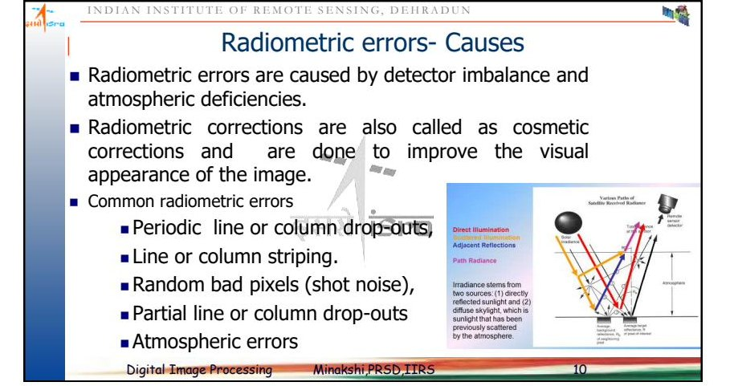
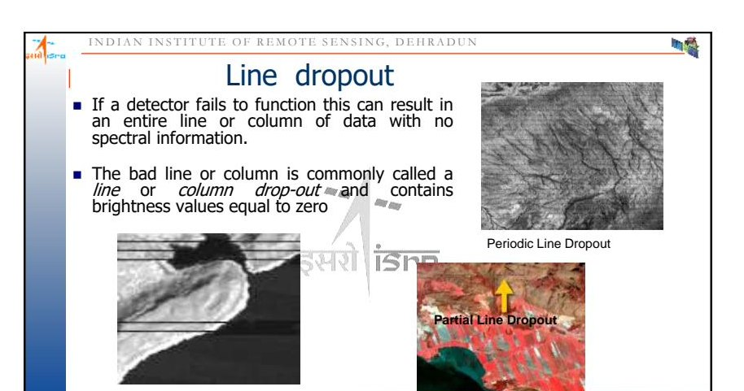
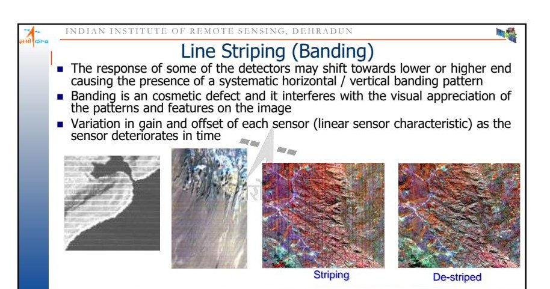
import numpy as np
def fix_dropped_lines(band, threshold=5):
"""Replace dead scan lines with the average of the line above and below."""
fixed = band.copy()
row_means = band.mean(axis=1)
dead_rows = np.where(row_means < threshold)[0] # near-zero rows = dropped lines
for r in dead_rows:
if 0 < r < band.shape[0] - 1:
fixed[r] = ((band[r-1].astype("float32") +
band[r+1].astype("float32")) / 2).astype(band.dtype)
return fixed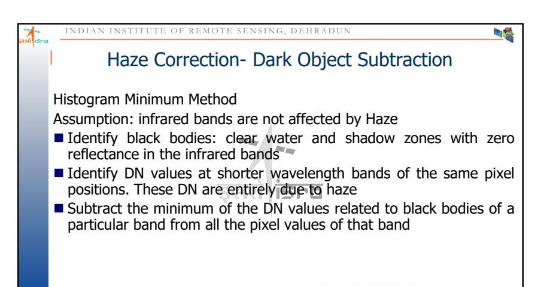
def dark_object_subtraction(band):
"""Simple haze correction: subtract the darkest 0.1th-percentile DN."""
haze_value = np.percentile(band, 0.1)
corrected = np.clip(band.astype("float32") - haze_value, 0, None)
print(f"Removed haze offset: {haze_value:.1f} DN")
return corrected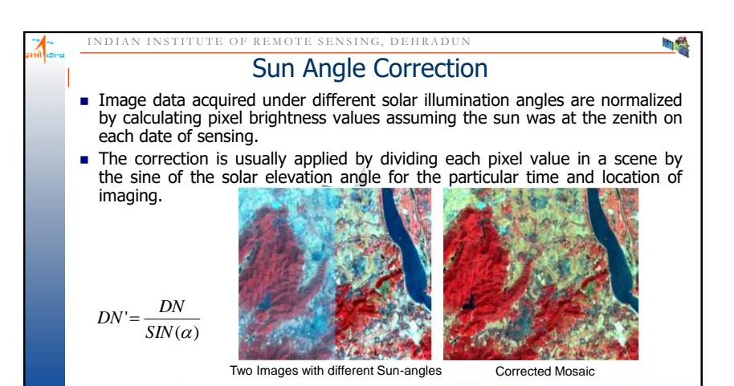
Geometric distortion comes from Earth's rotation during the scan, sensor viewing angle, platform velocity variations, and terrain relief. The fix: rectify the image onto a real map coordinate system.
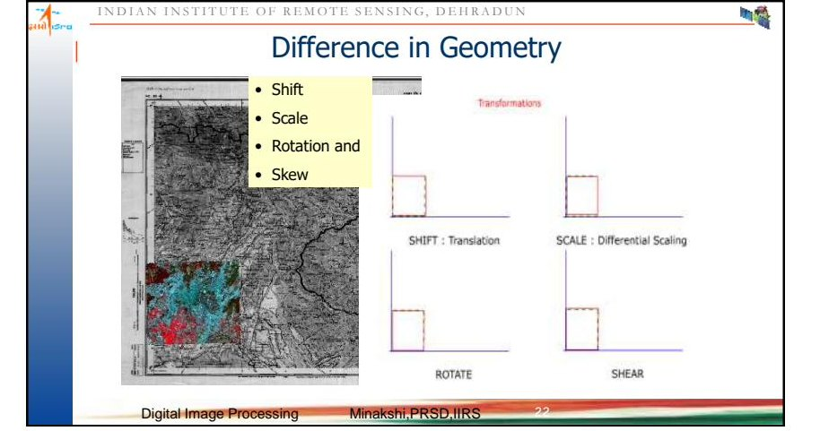
Ground Control Points — locations identifiable in both the image and a known-accurate map/GPS
Polynomial (affine) equations relating image (row,col) to map (x,y)
Root-mean-square error of GCP fit — should be well under 1 pixel
Interpolate new pixel values onto the corrected grid
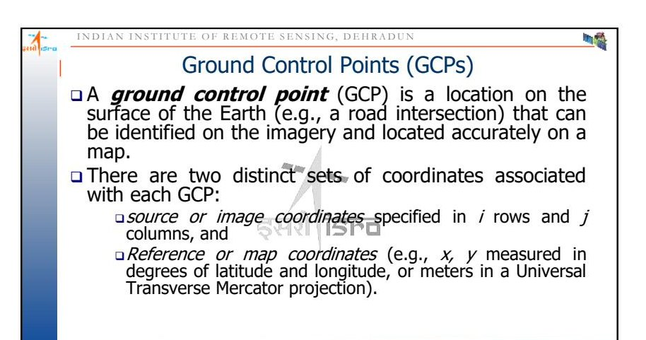
Imagine stretching a slightly warped photo to match a known-accurate map, like fitting a wrinkled sticker onto a phone screen. You pin down a handful of points you're sure about — "this road crossing in the photo is exactly here on the map" — and stretch/rotate everything else to make those pins line up. The more pins (GCPs) you use, and the more spread out they are, the less wrinkled and more accurate the final fit.
Once the transformation is known, the corrected image needs pixel values on a brand-new grid — a process called resampling / intensity interpolation. Three methods dominate:
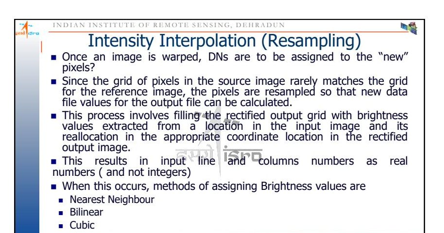
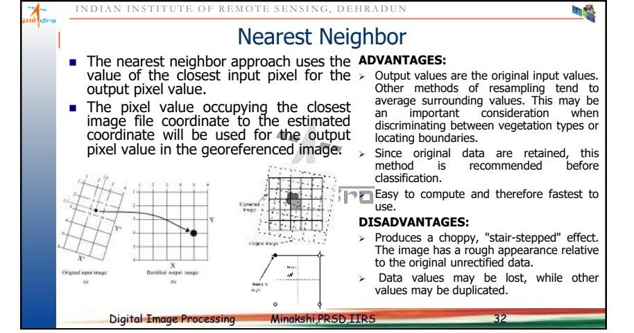
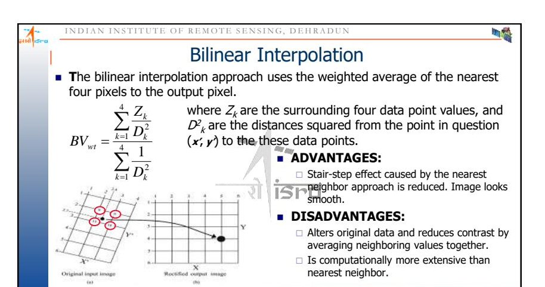
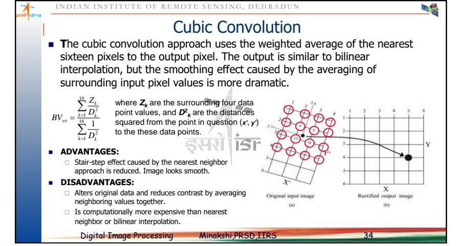
Resizing a corrected image is like resizing a digital photo, and you're choosing how new pixels get invented. Nearest neighbour just copies the closest original pixel — blocky, but never invents a value that wasn't really measured. Bilinear blends the 4 closest pixels — smoother, like a gentle blur. Cubic blends 16 — smoothest of all, like a photo-editing "smart resize." For a map you'll look at, smoother is nicer. For data you're about to classify (IP.4), you want the honest, un-blended original values — so nearest neighbour wins there.
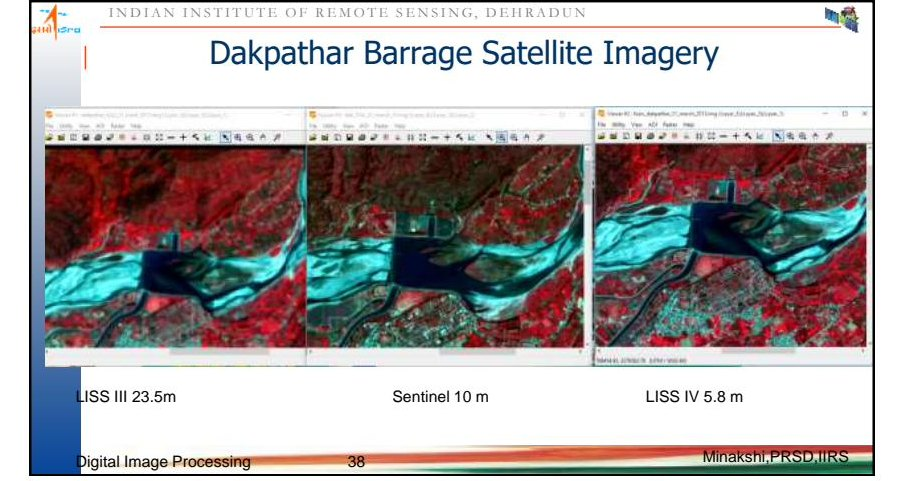
import rasterio
from rasterio.warp import calculate_default_transform, reproject, Resampling
dst_crs = "EPSG:32644" # target CRS, e.g. UTM Zone 44N
with rasterio.open("raw_scene.tif") as src:
transform, width, height = calculate_default_transform(
src.crs, dst_crs, src.width, src.height, *src.bounds)
kwargs = src.meta.copy()
kwargs.update(crs=dst_crs, transform=transform, width=width, height=height)
with rasterio.open("corrected_scene.tif", "w", **kwargs) as dst:
for band in range(1, src.count + 1):
reproject(
source=rasterio.band(src, band),
destination=rasterio.band(dst, band),
src_transform=src.transform, src_crs=src.crs,
dst_transform=transform, dst_crs=dst_crs,
resampling=Resampling.bilinear) # or .nearest, .cubicrasterio — but knowing what it's doing tells you which resampling method and which correction to choose.